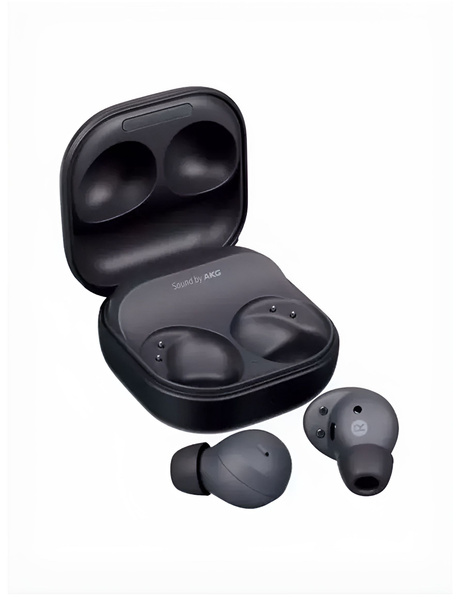

Samsung Galaxy Buds 2 Pro — компактные беспроводные наушники с качественным звуком и активным шумоподавлением. Поддерживают 24-битный кодек SSC для Hi-Fi звука, имеют удобную посадку и защиту от воды IPX7.
Samsung Galaxy Buds 2 Pro — компактные наушники премиум-класса с улучшенным активным шумоподавлением и фирменным кодеком Samsung Seamless Codec (SSC), обеспечивающим передачу 24-битного звука. Трёхмикрофонная система на каждом наушнике обеспечивает чистый голос при звонках даже в шумной обстановке. Наушники поддерживают функцию 360 Audio с отслеживанием положения головы, создавая объёмное звучание при просмотре видео на устройствах Samsung. Небольшой вес — всего 5.5 г на один наушник — и эргономичная форма обеспечивают комфортную посадку при длительном ношении. Защита IPX7 позволяет использовать наушники во время тренировок и под дождём. Зарядный кейс поддерживает как проводную зарядку через USB-C, так и беспроводную Qi-зарядку.
© Click Store. Все права защищены.